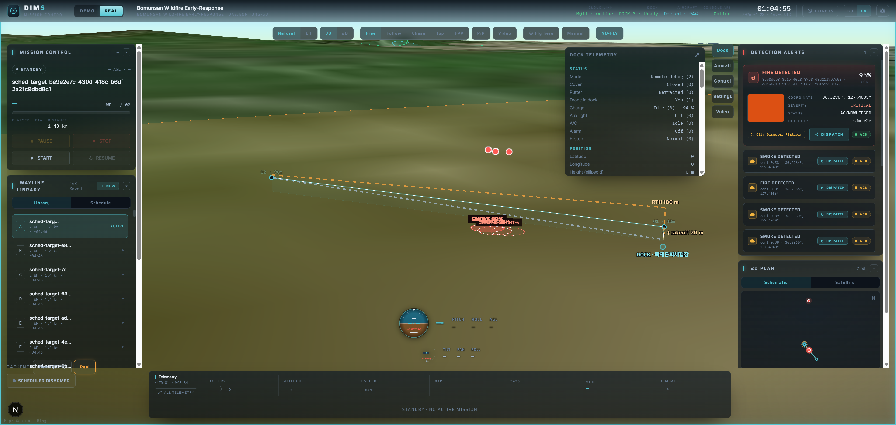

DIMS Backend Deep-Dive
Chapter 12 gave you the map. Now we walk the engine room. The backend is the part of DIMS that talks to the dock, plans missions, ingests telemetry, runs AI, raises alerts, and answers the console. If you work on DIMS, you will almost certainly work here — so let’s make it concrete.
The one mental model
The whole backend is a single Python service — the dji-bridge — sitting between a message broker and a database. The dock and drone never call our code directly; they publish and subscribe MQTT messages, and the bridge listens. Everything else (planning a flight, storing telemetry, detecting fire, pinning a coordinate) hangs off that one connection.
Think of an air-traffic control tower. The aircraft don’t walk into the office — they talk over one shared radio frequency (that’s MQTT). One controller (the bridge) is tuned to that frequency, and behind them sits a room of specialists: one updates the flight log, one watches the radar, one writes the incident report. The bridge wires all those specialists onto the one radio.
The stack
Before the parts, the materials. Every one of these runs locally for you via Docker Compose, so you get the real broker, the real database, and the real object store on your laptop — no cloud account needed.
A few of those names will be new:
PostGIS lets the database understand latitudes and longitudes; TimescaleDB makes the endless stream of telemetry rows efficient to store and query over time; MinIO is where every photo the drone takes lands. The JavaScript console (chapter 14) uses pnpm; the Python backend uses uv.
The dji-bridge & MQTT
When you run python -m dji_bridge, you start what we call the composition root. That is a fancy name for a simple, important idea: one place that builds everything and wires it together. The composition root reads its settings from the environment, opens one MQTT client, and attaches every handler module onto it — onboarding, flighttask, telemetry, media, alerts, and the operator API.
It then does three grown-up things that matter in production: it pre-warms (loads what it needs before traffic arrives), it re-subscribes on reconnect (if the broker connection drops, it re-registers all its topics automatically), and it shuts down cleanly. Because the dock is just another MQTT client, the seam between a simulated dock and a real one is pure configuration — you point the bridge at a different broker and serial number. No code changes. Hold onto that idea; it comes back at the end.
The bridge is a single MQTT client with many handlers bolted onto it. Swapping the simulator for a real Dock 3 is a config change, not a code change. That property is what lets us build the entire product before the hardware arrives.
Onboarding a dock (the handshake)
A dock can’t just start streaming. It has to onboard first: prove its license, learn the cloud’s configuration, and bind to our organization. This is the dock↔cloud handshake, and it only works if two boring-but-critical things line up.
The secure link needs synchronized clocks (NTP) and valid certificates (TLS). If the dock’s clock is skewed or a cert is wrong, the connection silently fails with unhelpful errors. When a dock “won’t connect,” suspect time and certs first.
Want the deep version? The two Dock-2 → Dock-3 fixes
Our onboarding code first worked against a DJI Dock 2. Moving to Dock 3 broke the bind, and the cause was tiny but real — exactly the kind of bug you’ll chase here:
- The config
app_idmust be a STRING, not an integer. Dock 2 tolerated a numericapp_id; Dock 3 rejects it. One pair of quotes was the difference between “connected” and “nothing happens.” - The org-bind reply needs an
err_infosentry per device. The reply has to carry one status entry for each device being bound. If that array comes back empty, the dock reports the maddeningly vague error “invalid org id” — even though the org id was fine.
Lesson: with the Cloud API, the error message often points at the wrong thing. Trust the wire shape, not the wording.

The mission lifecycle (flighttask)
“Fly to these points and take photos” has to become something a drone can actually execute. The bridge does that through the flighttask flow:
- An outbound service request says “run this mission” to the dock.
- The cloud generates the wayline as a WPML/KMZ file — DJI’s flight-plan format describing waypoints, altitudes, and actions.
- It uploads that KMZ to MinIO and hands the dock a link to fetch it.
- prepare → the dock downloads and validates the plan.
- execute → the drone actually flies it.
- The dock streams progress events back (waypoint reached, percent complete, finished).
You won’t hand-write KMZ files — the console’s mission planner (chapter 14) is the friendly front door to this exact flow. The backend turns the planner’s waypoints into the WPML the dock understands.
Telemetry & health (OSD + HMS)
While a drone flies, it gushes data. Two handlers catch it. The OSD handler (“On-Screen Display” — DJI’s name for the live telemetry stream) feeds a per-device, thread-safe “latest state” registry: for each serial number it keeps the freshest lat/lon, height, attitude, speed, battery, RTK fix, GPS quality, and flight mode. The HMS handler (“Health Management System”) stores health alarms — low battery, strong wind, sensor faults.
The dock’s OSD telemetry is not the same as the aircraft’s OSD. They’re separate devices on separate topics with different fields. Mixing them up is a classic beginner mistake — when you read telemetry, always know which serial number you’re looking at.
The operator API
The console and other tools don’t speak MQTT — they speak REST. So the bridge process also runs a small FastAPI app, the operator API, that shares the live MQTT client. Mutating routes can require an X-API-Key header; read routes are open within the trusted network.
| Method & route | What it does |
|---|---|
POST /missions | Start a mission (the planner’s “fly” button) |
POST /missions/{id}/stop | Stop a running mission |
POST /missions/pause · /resume | Pause / resume the active mission |
GET /telemetry · /telemetry/{sn} | Latest state for all devices, or one serial number |
GET /hms | Current health alarms |
GET /alerts · POST /alerts/{id}/ack | List alerts; acknowledge one |
GET /detections · /missions | AI detections; mission records |
Errors are mapped to honest HTTP codes so callers can react: 502 (the dock rejected the command), 504 (the dock timed out), 404 (not found), and 422 (your request body was invalid). Here are two of the most common calls — start a mission, then poll one aircraft’s telemetry:
# Start a mission — the same call the console's "fly" button makes
POST /missions
Content-Type: application/json
X-API-Key: <key>
{
"name": "bomunsan-north-ridge-fire",
"gateway_sn": "VIRTUAL-DOCK-0001",
"waypoints": [
{"latitude": 36.3270, "longitude": 127.4015, "altitude": 100},
{"latitude": 36.3290, "longitude": 127.4035, "altitude": 120, "take_photo": true}
]
}
# Then watch one aircraft's live state
GET /telemetry/VIRTUAL-M4TD-0001
→ { "lat": 36.3281, "lon": 127.4026, "height": 118.4,
"speed": 9.2, "battery": 76, "rtk": "FIX", "mode": "WAYLINE" }The media pipeline
When the drone takes a photo, the bridge never streams the image bytes through itself — that wouldn’t scale. Instead it uses scoped storage credentials (an STS token — temporary, limited-permission keys). The flow:
- The dock asks the bridge for STS credentials for the media bucket.
- The dock uploads the photo straight to MinIO using those short-lived keys.
- A callback tells the bridge “file X landed,” and the bridge records it — then enriches it with the camera pose read from the photo’s XMP metadata (the orientation/position DJI embeds in the JPEG).
That pose — where the camera was and where it was pointing — is exactly what the coordinatizer needs to turn a pixel into a map pin (chapter 15).
The alert pipeline (the ≤8-second promise)
This is the payoff of the whole platform. When the AI detects fire or smoke and the coordinatizer attaches a real-world coordinate, the alert pipeline:
- Classifies severity from the detection.
- Saves an idempotent
alertsrow — “idempotent” means the same detection won’t create duplicate alerts. - Fans it out, bounded and non-blocking, to a webhook (mobile + dashboard) and the city disaster-safety platform connector.
“Bounded and non-blocking” means the fan-out can never stall the pipeline — a slow downstream service won’t hold up the next detection. The whole chain, from detection to delivered alert, meets a ≤8-second KPI — fast enough to matter for a real forest fire.

The simulator — how you’ll actually test
You almost certainly won’t have a Dock 3 on your desk. You don’t need one. Running python -m dji_bridge.simulator starts a SITL (“software-in-the-loop”) virtual dock that role-plays a real Dock 3 + Matrice 4TD over the same broker.
The simulator onboards like a real dock, streams telemetry, flies the actual cloud-built KMZ with a real kinematic flight model, uploads real DJI-XMP JPEGs, and emits progress, media, and HMS. The bridge, detector, coordinatizer, alerter, and operator API all run completely unchanged. Almost all DIMS development and testing happens this way — safely, for free, with no hardware.
Because the simulator is only the device side, everything you build against it is the real product. When the hardware arrives, you don’t rewire anything — you stop the simulator and point the bridge at the real dock. That clean swap is the whole reason the backend is built the way it is.
“The DIMS backend is the dji-bridge: a Python 3.12 / FastAPI service that wires onboarding, flighttask, telemetry, media, and alert handlers onto one MQTT client through EMQX, backed by Postgres/PostGIS/TimescaleDB, Redis, and MinIO. Docks onboard over a TLS+NTP handshake; missions become WPML/KMZ waylines that prepare→execute→report progress; OSD feeds a live state registry and HMS tracks health; an operator REST API drives and reads it all; photos upload to MinIO via STS and get enriched with camera pose; and fire detections become idempotent, coordinatized alerts fanned out in ≤8 seconds. And I can test the entire thing against the SITL simulator with no hardware, because swapping in a real dock is config, not code.”